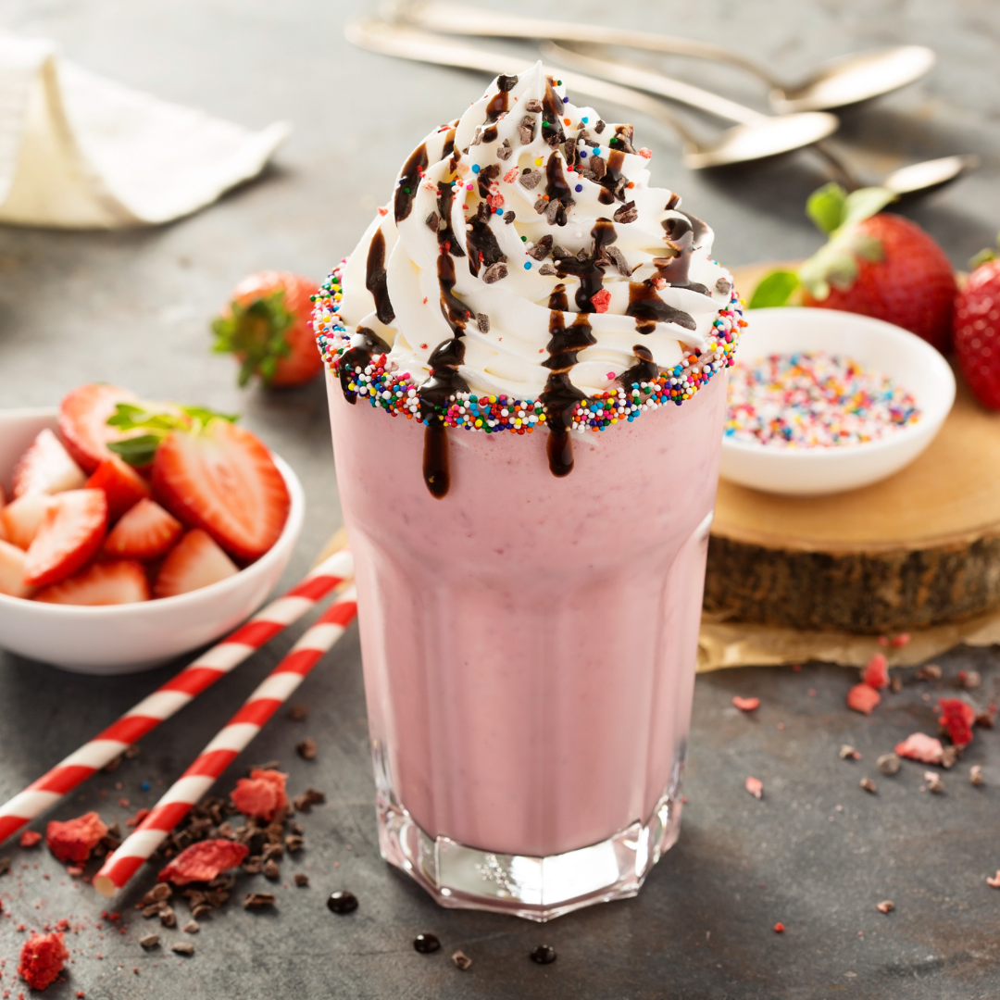

Strawberry Milkshake Recipe

How To Make a Strawberry Milkshake
Homemade milkshakes may take extra time to prepare but choosing to use this recipe than odering out may just prove to be one of your best ideas decisions.
The problem with most milkshakes is that most either are not thick enough, does not contain enough cookie crumbs or if you find one that ticks all the boxes it normally costs the price of a house (Not literally but you know what I mean).
- 250g Strawberries
- 3 Large Scoops Vanilla Ice Cream
- 300ml Cold Milk
- Extra Strawberries to serve (optional)
- Whipped or spray cream to serve
Steps to Success
- Add Strawberries, milk and ice cream into a food processor and blend until smooth and creamy.
- Pour milkshake into the glass and top with whipped cream and some fresh strawberries.